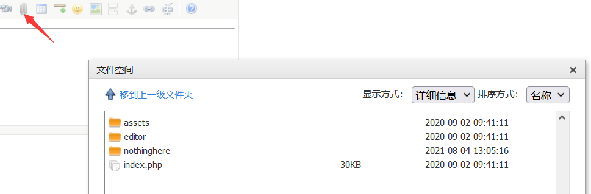
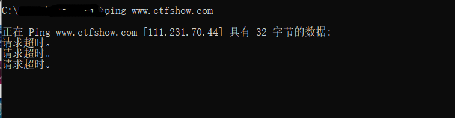
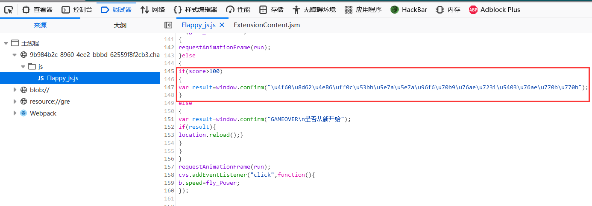
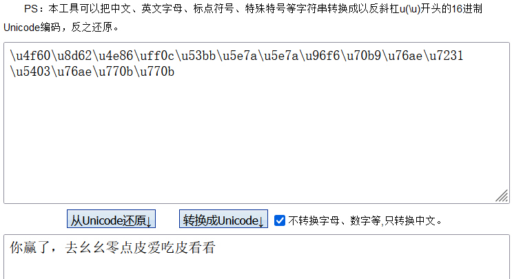
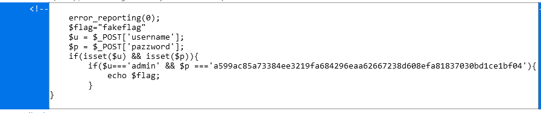

ctfshow-web入门信息收集篇
web5
源码泄露：.phps
web7 web8
网站备份文件后缀:
a) 代码版本控制的文件泄露：
.git
git 是一个开源的分布式版本控制系统https://git-scm.com/
在运行 git init初始化代码库的时候，会在当前目录下面产生一个.git的隐藏目录，用来记录代码的变更记录等等。
在发布代码的时候，把.git这个目录没有删除，直接发布了。使用这个文件，可以用来恢复源代码。
.svn
SVN（subversion）是源代码版本管理软件。是一个开放源码的版本控制系统
svn同样在项目根目录下会创建一个名为.svn的隐藏文件夹, 包含了所有分支commit信息和代码记录.
b) .swp .~ .bak .bash_history
web9
发现网页有个错别字？赶紧在生产环境vim改下，不好，死机了
vim缓存文件：
在使用vim时会创建临时缓存文件，关闭vim时缓存文件则会被删除，当vim异常退出后，因为未处理缓存文件，导致可以通过缓存文件恢复原始文件内容
以 index.php 为例：第一次产生的交换文件名为 .index.php.swp
再次意外退出后，将会产生名为 .index.php.swo 的交换文件
第三次产生的交换文件则为 .index.php.swn
https://www.cnblogs.com/anweilx/p/12420708.html
ctf-wscan扫一下，得到index.php.wsp，访问得到flag。
web11
域名其实也可以隐藏信息，比如ctfshow.com 就隐藏了一条信息
dns域名解析：
A (Address) 记录 是用来指定主机名（或域名）对应的IP地址记录。
别名(CNAME)记录 这种记录允许您将多个名字映射到同一台计算机。
MX（Mail Exchanger）记录 是邮件交换记录，它指向一个邮件服务器，用于电子邮件系统发邮件时根据 收信人的地址后缀来定位邮件服务器。
TXT 记录 一般指为某个主机名或域名设置的说明。
NS记录 ns记录全称为Name Server 是一种域名服务器记录，用来明确当前你的域名是由哪个DNS服务器来进行解析的。这里的NS记录只对子域名生效。
https://www.zhongjie.com/help/173.html
web14
有时候源码里面就能不经意间泄露重要(editor)的信息,默认配置害死人
同样使用ctf-wscan扫，得到/editor/，访问得到一个编辑器页面。
编辑器中有上传图片、插入文件、flash等功能，点击发现都存在一个文件/图片空间，可以查看到根目录。
寻找flag，首先还是查看了/var，/var目录主要针对常态性变动文件，包括缓存（cache）、登录文件（logfile）以及某些软件运行所产生的文件，包括程序文件（lock file，run file），或者例如Mysql数据库的文件等。进去发现www：
接着找到了html——>nothinghere（跟editor属于同一层目录，解释了最后直接访问url/nothinghere/fl000g.txt的原因）——>fl000g.txt
访问：url/nothinghere/fl000g.txt
得到flag。

web15
公开的信息比如邮箱，可能造成信息泄露，产生严重后果
目录扫描得到admin/，访问尝试admin登录，返回密码错误。
点击忘记密码，需要输入所在地。然后想到题目说和邮箱有关，结果一直在网上找通过QQ邮箱找所在地balabala的，我寻思这么搜这不是社工嘛，看着也不太对哇。后来一想去qq上搜了一下那个邮箱的QQ号，发现个人信息的所在地是西安（一开始我还以为这QQ号是假的来着），得到密码admin7789，登录后台得到flag。
web16
对于测试用的探针，使用完毕后要及时删除，可能会造成信息泄露
php探针是用来探测空间、服务器运行状况和PHP信息用的，探针可以实时查看服务器硬盘资源、内存占用、网卡流量、系统负载、服务器时间等信息。
下载：http://www.yahei.net/tz/tz.zip
在URL添加/tz.php，雅黑探针，查看phpinfo，寻找flag。
web17
透过重重缓存，查找到ctfer.com的真实IP，提交flag{IP地址}
hint:直接ping www.ctfshow.com 获得flag
•ping命令主要的功能是用来检测网络的连通情况和分析网络速度。
•ping发送一个ICMP回声请求消息给目的地并报告是否收到所希望的ICMP回声应答。它是用来检查网络是否通畅或者网络连接速度的命令。
•原理：网络上的机器都有唯一确定的IP地址，我们给目标IP地址发送一个数据包，对方就要返回一个同样大小的数据包，根据返回的数据包我们可以确定目标主机的存在，可以初步判断目标主机的操作系统等。

web18
不要着急，休息，休息一会儿，玩101分给你flag
熟悉的游戏关卡题，打开查看源码，发现有一个js/Flappy_js.js文件，所以去到调试器查看游戏的js代码文件，翻看代码，在代码中找到和flag相关的一小段代码：

如果分数大于100，则返回一段uncode解码的内容，一开始我还没有直接就想到\u这个编码，而是去执行这个代码相关的函数，也可以把分数刷到101分，但是每次执行只能加一分，而且结果的返回也是一瞬间的，后来想到了这个编码，就去试了一下：

提示去110.php（皮爱吃皮？？？），得到flag。
web19
密钥什么的，就不要放在前端了
查看源码，发现用户名和密码都已经给出来了

对用户名和密码进行post传参提交即可。（直接在输入框输入的话，通过抓包发现，密码会被加密）
hackbar进行post提交：
username=admin&pazzword=a599ac85a73384ee3219fa684296eaa62667238d608efa81837030bd1ce1bf04
得到flag。
web20
mdb文件是早期asp+access构架的数据库文件，文件泄露相当于数据库被脱裤了。
在ASP＋Access应用系统中，如果获得或者猜到Access数据库的存储路径和数据库名，则该数据库就可以被下载到本地。
access数据库：Access是一个既可以只用来存放数据的数据库，也可以作为一个客户端开发工具来进行数据库应用系统开发。
Access的对象有表、查询、窗体、报表、页、宏和模块，以上对象都存放在后缀为（.mdb或.accdb）的数据库文件中，便于用户的操作和管理。
直接在URL处添加hint所给出的路径，/db/db.mdb，访问下载.mdb文件，全局搜索flag得到答案。